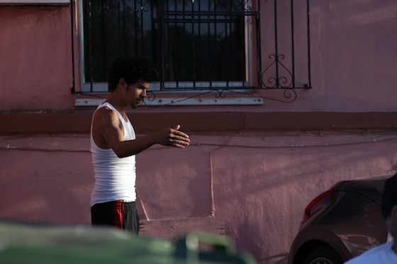
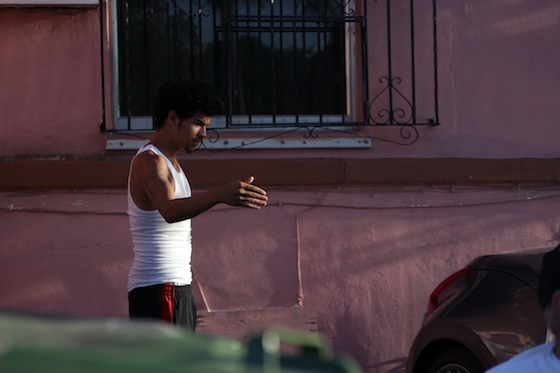
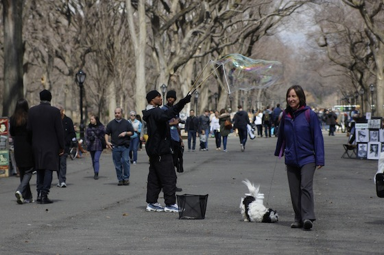
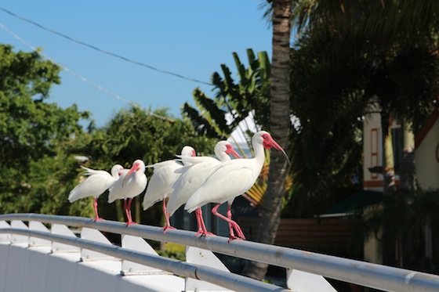
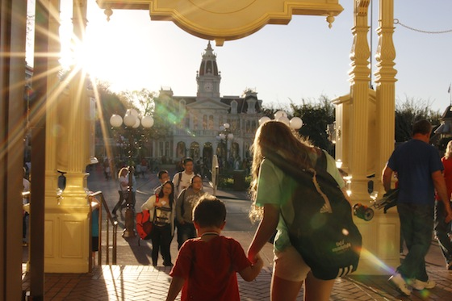
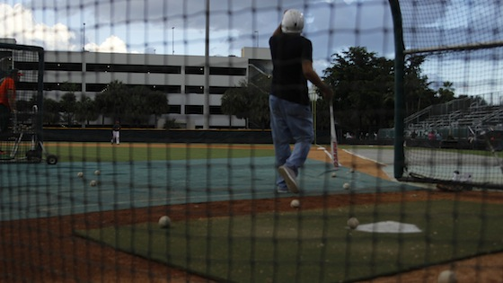
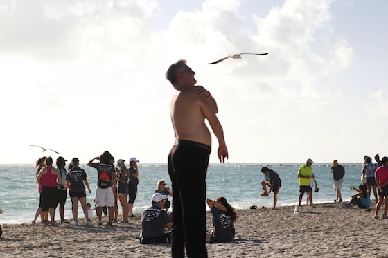
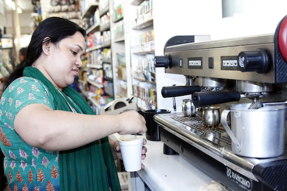
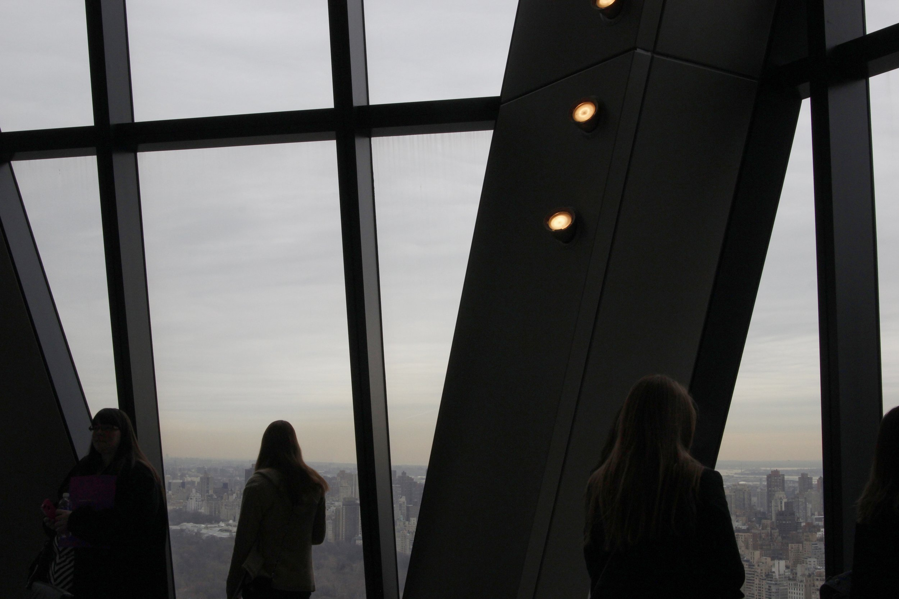

Llevame al Partido
Photos taken around Marlins Park in Little Havana in April 2014 

Because there is not enough parking available in the garages at the stadium, many individuals – as well as local businesses – have opened up their homes and lots for additional parking space. These low-income families stand out there every game day for the opportunity to make $10-15 per car that parks on their property. Still, home and apartment owners who have lived in the neighborhood for decades say they miss the heyday of the Orange Bowl, when they wouldn’t even have enough room to accommodate all the parking demand.
I wanted to take a look past the stadium and the parking situation and tell a story about the other people I’d find. More than 90 percent of people living in the neighborhood are Hispanic or Latino – half are Cuban. I often visited before first pitch, but I returned sometimes at the end of the night and even on empty weekend afternoons while the baseball team was away. Upon first glance, the surroundings of Marlins Park are not bustling with life when there are no fans pouring into the stadium. But if you pay close attention to the street vendors, the families sitting and chatting out in their front yard, and the father and son pair tossing a baseball, you’ll find a community with a heart.
Single Shots
Documentary photographer Maggie Steber and her photography students play with a silky scarf in the School of Communication studio.
Junior is a bubble blower in New York's Central Park. He has been practicing his craft for about a year because it brings smiles to people's faces.
Ibises in a row sit on the bridge of Biscayne Point Island overlooking a canal in Miami Beach, Fla.
The late afternoon sun illuminates a mother and son as they enter Disney's Magic Kingdom.
A figure in the dark catches Maria's eye, as she sits in her car at the cul-de-sac of a Miami Beach neighborhood.
A Hurricanes baseball fan at Alex Rodriguez Park walks out of the batter's box during FanFest before February's annual Alumni Game.
A gentleman strolling along 1st Street beach looks up into the sky after he has completed the Tropical 5K race in January.
Nazrin prepares cafe con leche for a customer at the convenience store and Latin American market on the north end of Miami Beach. She has worked there for 13 years, ever since leaving India.
Journalism students on a tour of the Hearst building in New York City stare out the window at the view of Manhattan.